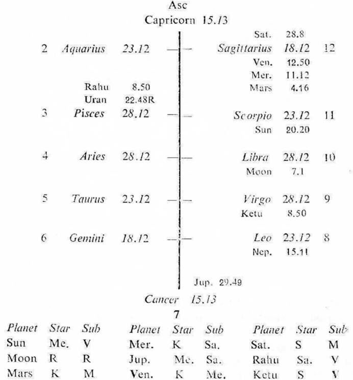

Male. Birth 6-12-1931 Sunday; 10.55 A.M. I.S.T.; 23°N 2', 72°E 35; Ayanamsa 22° 48'.

10th cusp (a) If the sublord of the 10th cusp is the significator of 2, 7 or 10, an independent profession is promised during the joint period of the significators of 2, 7 and 10.
In this map the cuspal sub lord of 10 is Venus. It is in the star Ketu which represents Sun in 10 (Ketu being in the star Sun). It is in the sub Mercury in 11. So Venus is the significator of 10 and connected with 11. Hence it promises an independant profession during the joint period of the significators of 2, 7 and 10.
(b) The 10th cusp is jointly operated by Venus (sign lord), Jupiter (star lord) and Venus (sub lord). The profession in this case will be shown by the combination of Jupiter and Venus. Jupiter denotes legal profession; while Venus deals with the function of a Judge who harmonises law. Hence the native may practise as a Lawyer or serve as a Judge.
(a) This native was born during the period of Rahu with balance of 17Y 6M 10P. The period of Jupiter was current from 16-6-1949 upto 16-6-1965.
(b) He completed his studies in Law in the month of February 1953 during the joint period of Jupiter, Saturn and Moon the significators of 3 and 8.
(c) He started his career as a Lawyer in the month of June 1953 during the joint period of Jupiter, Saturn and Rahu the significators of 2, 10 and 11.
The period ruler Jupiter governs law and dignity. It does not like subordination. So it denotes an independent practice as a Lawyer.
Jupiter owns 3, so the intellectual abilities of the native will serve as the source. Its star lord Mercury in 11 is in association with Mars owning 11, Venus owning 10 and Saturn owning 2. Its sub lord Saturn owns 2. So Jupiter is the significator of 2, 10 and 11.
(d) The influence of the sub periods is to be interpreted in concurrence with the influence of the period ruler. In this case the sub period ruler Saturn and the inter period ruler Rahu both are in harmony with Jupiter the period ruler. Further, the next following sub period rulers current during the period of Jupiter concur with Jupiter, because they all are connected with 2, 10 or 11. Hence he successfully practised as a Lawyer throughout the period of Jupiter upto 16-6-1965.
(e) The period of Saturn started from 16-6-1965. The houses 1, 5 and 9 denote any sort of change in the professional activities. Saturn owns 1 (change) and 2 (income); so the change in income will be the source. It is in the star Sun (Govt.) in 10 (professional activities). It is in the sub Moon owning 7 (contract or dealings with Govt.) and occupying 9 (change in the existing set up of activities). So Saturn is the significator of 10 and connected with 7, 9; 1 and 2. Thus Saturn indicates that the professional activities of the native will be connected with Govt. by way of contractual dealings and he will derive income thereby. This amounts to entering into a new sphere.
(f) Further, Saturn denotes permanency, steadiness, responsibilities and inclination for service.
So during the joint period of Saturn, Saturn and Saturn in the month of October 1965, the native was appointed as a Special Govt. Pleader in addition to his private practice. Thus Saturn effected a change in the professional activities of the native.
(g) Now in the period of Saturn the sub period of Mercury will be in progress from 19-6-1968 upto 28-2-1971. Mercury owns 6 (service) and 9 (change). So another change in the professional activities and the form of service will become the cause of an event in the life of the native. It is in the star Ketu (being in the star Sun) representing Sun in 10 (Govt). It is in the sub Saturn owning 1 and 2. So Mercury is the significator of 10 (position & power) and connected with 1 (change), 2 (income), 6 (service) and 9 (change).
The influence of the sub period ruler Mercury is to be construed in concurrence with the influence of the period ruler Saturn as discussed above. So Saturn and Mercury both indicate service, position, power, relations with Govt. and income thereby. Hence it may be inferred that the native might accept a post in Govt service carrying position and power during the sub period of Mercury.
(h) Mercury is controlled by its sub lord Saturn which is both the period ruler and also the cuspal sub lord of 2 (income), 3 and 9 (change). So the joint period of Saturn, Mercury and Saturn (25-9-1970 to 28-2-1971) indicates that the native will give up the independent practice as a Lawyer and he will join Govt. service.
(i) In fact he was offered the post of a Judge in the Small Causes Court during this time. He accepted it and he took charge of the post on 19-12-1970 during the joint period of Saturn, Mercury, Saturn and Sun. Sun is in 10 (Govt., position, power); it is in the star Mercury owning 6, 9 and occupying 11; it is in the sub Venus owning 5, 10 and occupying 11. The star lord Mercury is in association with Saturn owning 1, 2; Mars owning 11 and Venus. So Sun is the significator of 6 (service), 9 (change from a Lawyer to a Judge), 11 (success, prospects) and connected with 5 (change in activities), 10 (position, power); 1 (change of profession) and 2 (income from Govt.). Thus the native ceased to be a Lawyer and became a Judge in Govt. judicial service.
On 19-12-1970 Sun was transitting in Sagittarius 3° 30′ in the sub Sun (the Sookshma period ruler); Moon in Leo 16° 0′ in the sub Sun and Saturn in Aries 23° 8′ R in its own sub (the period and inter period ruler). Thus the transit agrees with the joint period rulers.